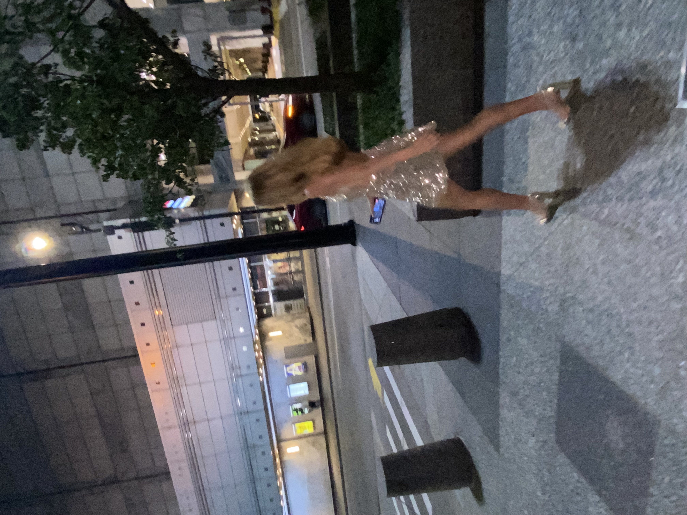
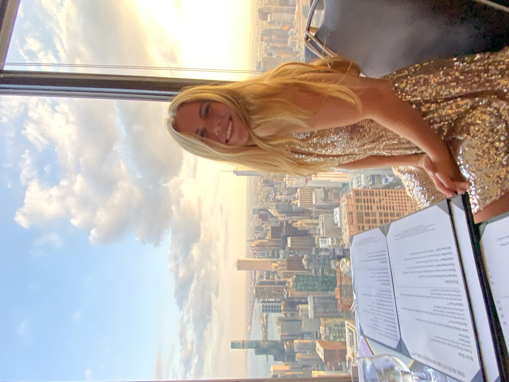

Birthday Dinner Dress
- My main goal was to make a sparkly dress for my birthday dinner
- The sequined fabric was a much needed challenge for my sewing
- Combated and adapted to many challenges, such as the fabric breaking needles and the sequins weighing the dress of the skirt down in a way that required more structure than I was used to
- This ended up being a good practice run on sequined fabric for me to learn the necessary skills to make my sequined homecoming dress 2 weeks later

